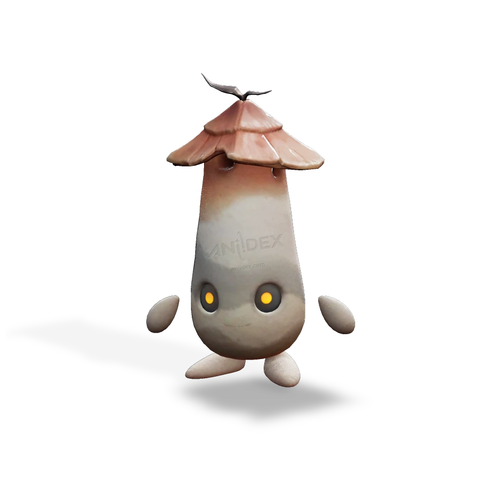

รายชื่อ Aniimo › #075

หินป้อมจิ๋ว (Cozite)
#075ธาตุดินSupport Lumin StageTier D
หินป้อมจิ๋วสร้างเปลือกของพวกมันทีละเล็กทีละน้อยด้วยโคลน เมื่อตกอยู่ในอันตราย พวกมันจะพ่นควันออกมาจากรูด้านบนเพื่อปกคลุมบริเวณโดยรอบและซ่อนตัว
ดูรายละเอียดเต็ม ร่างพิเศษ และร่างเปล่งประกายค่าสถานะพื้นฐาน
| HP | 77 |
|---|---|
| ATK | 87 |
| P.DEF | 67 |
| M.DEF | 67 |
| REGEN | 100 |
| BREAK | 50 |
สกิล
| โจมตีปกติ | ATK ดิน ใช้พลังแห่งดินโจมตีเป้าหมายจากระยะไกล |
| สกิล 1 | Rolling Clay Ball ดิน เตะก้อนโคลนไปข้างหน้า ทำให้มันกลิ้งและสร้างดาเมจเป็นวงกว้างเมื่อกระทบพื้น กดค้างเพื่อเล็งเป้าและขว้าง |
| สกิล 2 | Shielding Smoke ดิน สร้างม่านควันที่บดบังทัศนวิสัย จะไม่สามารถเล็งเป้าหมายที่อยู่ภายในม่านควันได้ |
สายวิวัฒนาการ
- หินป้อมจิ๋ว → หินปราการ (แอนีโมเลเวล 51)
จุดเกิด
- Zephyrus Landbridge Lv. 47–57
Held Item ที่แนะนำ
- Spirited Feather แอนีโมที่ติดตั้งจะได้รับพลังฟื้นฟูเพิ่ม 0.7 หน่วยต่อเลเวล
- Auspicious Bell เมื่อใช้สกิล มีโอกาส 20% ที่จะได้รับ 5 EP
งานใน Homeland
งานธาตุดิน Lv.1, ขนของ Lv.1